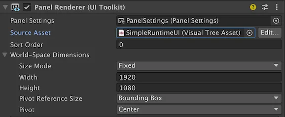

A Panel Renderer component references a UXML document and a Panel Settings asset. It serves as a bridge between the Scene and a UXML document. The UXML document specifies the UI structure, while the Panel Settings asset handles rendering.
To create a Panel Renderer component, from the menu, do one of the following:
To Connect the UI to a panel, in the Inspector window of the Panel Renderer component, configure Panel Renderer component.

A panel can display UI from more than one Panel Renderer component. This allows you to break complex UIs into smaller, more manageable parts. Each Panel Renderer component references a different UXML document and the same Panel Settings asset.
Each Panel Renderer component has a Sort Order property that controls rendering order. The UXML documents are rendered based on their order in the Hierarchy: child Panel Renderer components render on top of their parents. Sibling Panel Renderer components (at the same hierarchy level) render in ascending order based on their Sort Order value. The lower the Sort Order value, the earlier the Panel Renderer component renders. To avoid unpredictable rendering, assign unique Sort Order values for siblings when precise layering is important.
Note: If there are multiple Panel Renderer components attached to the same Panel Settings, all these Panel Renderer components share a common focus navigation context. If they have distinct Panel Settings, navigation doesn’t jump automatically from one to the other even if you arrange them side by side. To make navigation jump from one to the other, you must set the focusController of the Panel Settings to the FocusController of the Panel Renderer component you want to jump to.
Panel Renderer is a native renderer component that connects UI Toolkit visual elements to Unity’s GameObject rendering pipeline. Its lifecycle follows standard Unity component behavior but with specialized UI management.
Unity initializes a Panel Renderer’s visual tree when the component is created, when its PanelSettings or VisualTreeAsset properties change, or when the component is enabled. The visual tree is constructed and attached to the GameObject’s hierarchy, and any registered UIReloadCallback delegates are invoked. UI Toolkit calls the UIReloadCallback during the initial setup of the UI, and anytime the VisualTreeAsset changes. Use RegisterUIReloadCallback to safely interact with UI elements after the visual tree loads:
void OnEnable()
{
panelRenderer.RegisterUIReloadCallback(OnUIReload);
}
void OnDisable()
{
panelRenderer.UnregisterUIReloadCallback(OnUIReload);
}
void OnUIReload(PanelRenderer renderer, VisualElement rootElement)
{
// Your UI initialization logic.
}
If you assign or change the PanelSettings or VisualTreeAsset properties, the Panel Renderer marks itself as dirty and reloads the UI. This triggers the UIReloadCallback again. If the GameObject’s parent changes, or if the PanelRenderer is nested under another Panel Renderer, the component updates its hierarchy and might reparent its root visual element accordingly.
When you enable the Panel Renderer component, Unity initializes the UI and adds its visual elements to the visual tree. When you disable it, Unity removes its visual elements from the hierarchy and cleans up resources.